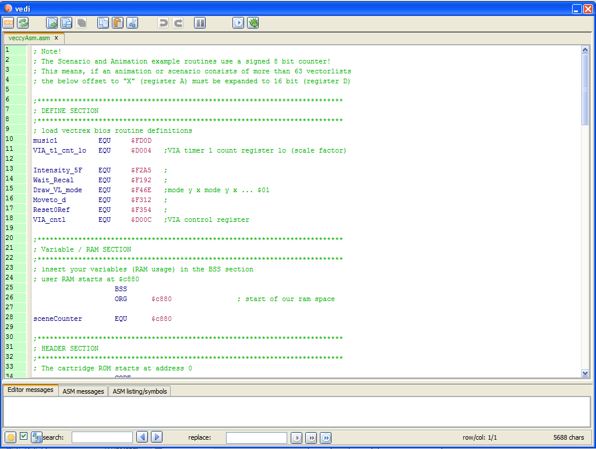
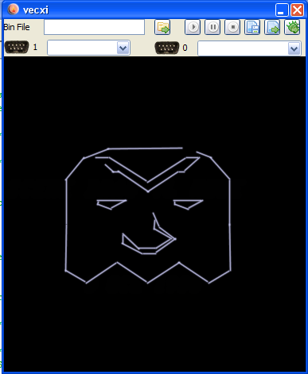

call the dialog
Images can be "converted" to vector images, the conversion and display code can be generated by vecci and exported to vedi (see also the vecci→Vector images documentation).
call the dialog
In vecci you can find the relevant button in the tab "2d-tools". Upon pressing the button "image to vector" the conversion dialog is opened. In the upper left corner a small button  is located, with that you can load an image.
is located, with that you can load an image.

handle the dialog
In the lower right corner you can discern a button "to vecci", pressing that, the generated vectorlist is passed on to vecci (you have to close the dialog afterwards manually).
The generated vectorlist is not guaranteed to be "clean" (usable for vectrex) straight out of the box, it is wise to check the list on the tab "vectorlist status".

check vectorlist
In the example you see, that there is at least one vector which is longer than 127 - that is not correct for vectrex.
Vecci is probably able to remedy any faults you encounter. In the provided example one must go to the tab "shortcuts" and press the button "split where needed". And the vectors which were to long are split in half.

use "split where needed"
The generated vectorlist in vecci will most probably be not a closed list and as such is not exportable straight away.
To generate an exportable "setting", go to the tab "scenario" and press the button "seperate paths as scenario entries". Using that button - for each connected path a scenario vector list is generated and put into the scenario list at the bottom.

create a scenario
The generated scenario can be used to generate and export code.
For that chose the tab "export" and there (for example) "text export". In the lower half of the tab a section labeled "Animation/Scenario" is displayed. Usually for a scenario only the first and the fourth button is enabled. Pressing one of these buttons will generate source code. The generated data is displayed in the text area on that tab (the data is also copied to the system clipboard). Pressing the button  opens the generated data in vedi (the file is copied to the tmp directory).
opens the generated data in vedi (the file is copied to the tmp directory).
If befor pressing the generate button the checkbox "runnable" is selected, an example source code for direct binary generation is generated.

create a scenario
The generated file is a standard vector-list drawing "program" - therefor not further explained here. The generated file in a "tmp" vedi:

example main

example vector image display